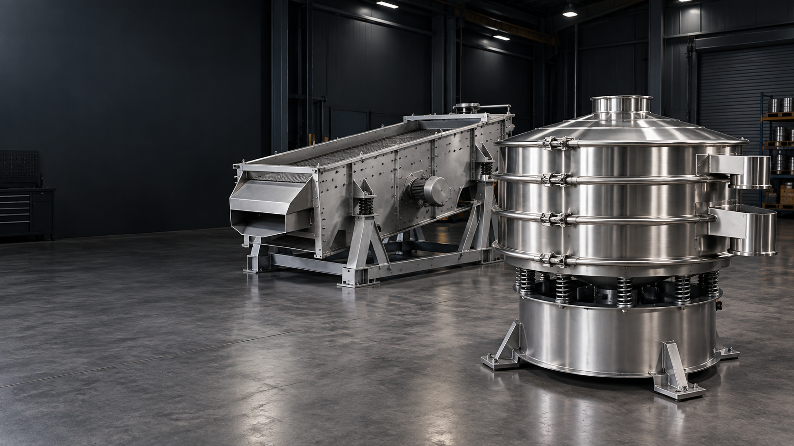

01 / EXPLORE
Understand the material
Describe the feed, target separation and operating conditions.
Explore Understand the material ↗
SCREENING / CONVEYING / INTEGRATIONXINXIANG VIBRATING SIEVE
Explore screening and material handling equipment for production environments. Our approach starts with a clear understanding of your material and the separation you need to achieve.
Share your target particle size, required throughput and available space to start a practical equipment discussion.
Tell us about your project →HOW TO START
01 / EXPLORE
Describe the feed, target separation and operating conditions.
Explore Understand the material ↗02 / EXPLORE
Explore screening methods and connected equipment.
Explore Review the configuration ↗03 / EXPLORE
Share your requirements in a structured project brief.
Explore Prepare the enquiry ↗DISCUSS YOUR APPLICATION